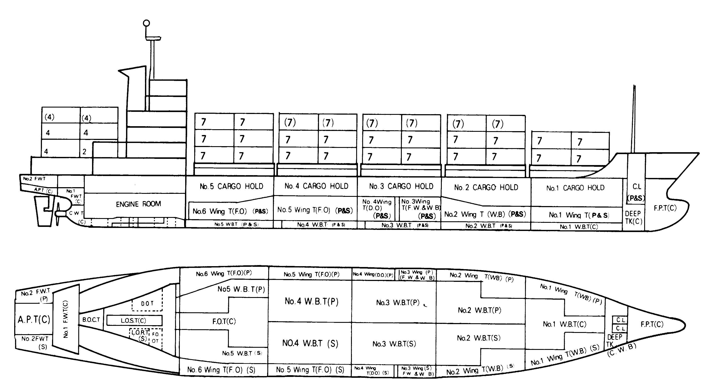

342 TEU 5,848 DWT 3,996 GRT Container Blt 1995 Kr
/ informed by BLUE MARINE CO., LTD.
(18-555)

-
BUILT
:
28.09.1995 SLS SHIPBUILDING CO.,LTD. KOREA
- FLAG/CLASS
:
KOREA / KR, +KRS1 | CONTAINER SHIP | CLEAN1 CDG | BWE| +KRM1
- LOA/L/B/D
:
107.51 / 98.06 X 17.20 X 8.30 m
- DWT/draft
:
5,848 / 6.500m
- GRT/NRT
:
3,996 (LOCAL 3,994) / 2,023
- DISPLACEMENT/LIGHTWEIGHT : 8063.7 / 2216.2 ton
- MAIN ENGINE
:
STX CO. SSANGYONG MAN B&W 7L35MC, 5320PS X 200rpm
- GENERATOR
:
KWANGYANG YANMAR S165L-DN, 2set, 450PS, 445VOLT,
350KVA X 1200rpm
- SPEED
:
16.68kt at Max, 14.8kt at NCR 15%S.M.
- CARGO CAPA. : Cont. in Hold 132 / Cont.on Deck 210 (TTL. 342 TEU)
- FUEL OIL TYPE : FO 380CST
- FO CONSUMPTION : AT SEA HFO 15.3 ton @ NCR, MDO 1.0ton,
AT PORT MDO 1.5 ton
- COMPLEMENT : 20 P
Information History
- 180720 : She is available for sale.